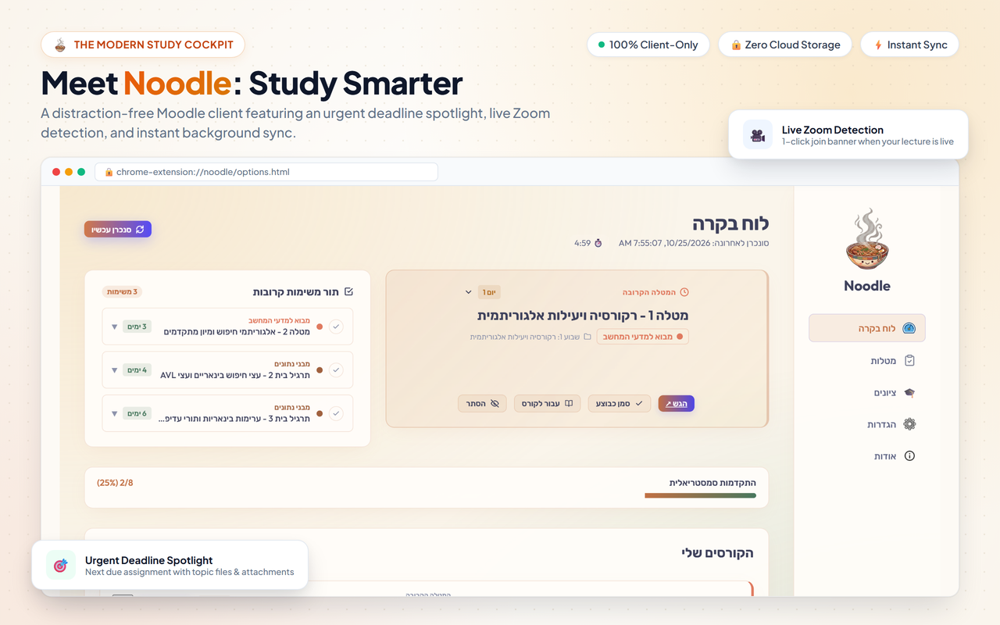
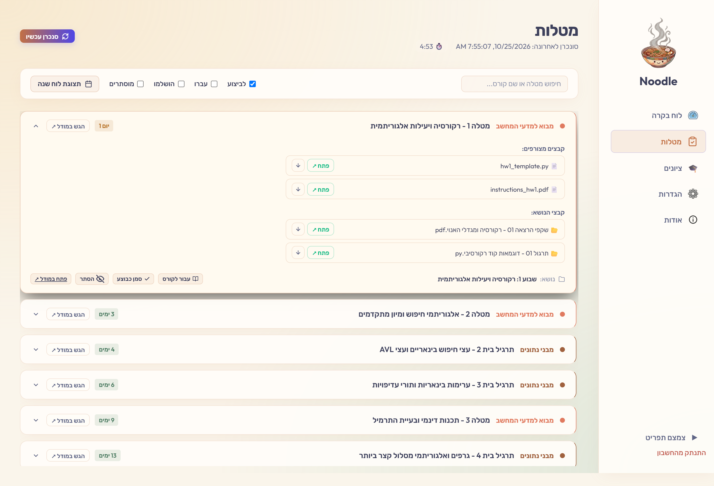
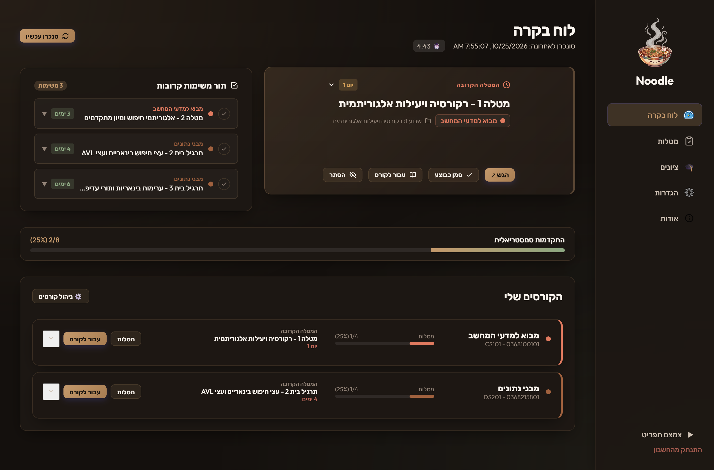
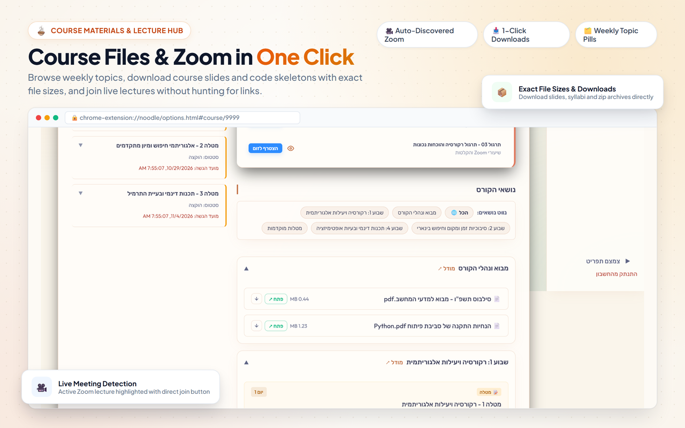
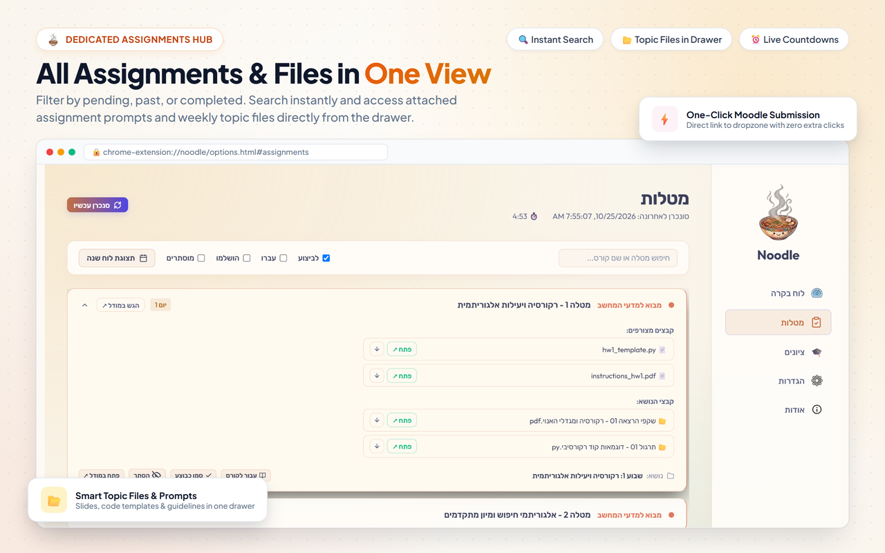
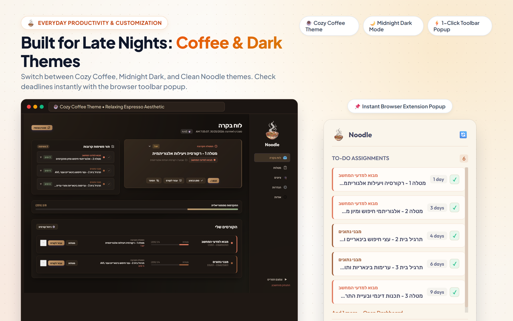

All your deadlines, Zoom meetings, Panopto recordings, and course files in one fast, focused dashboard — with automatic 2-way Google Tasks synchronization.




Tel Aviv University's Moodle has all your courses, but finding homework or Zoom links takes too many clicks through nested folders and subpages.
Deadlines are spread across different course pages and accordions. Keeping track of what's due this week takes unnecessary mental effort.
Moodle doesn't sync with your personal calendar. Manually copying due dates into Google Calendar takes time and easily gets outdated.
Zoom links and Panopto lecture recordings are often buried across forums, announcements, and syllabus documents.
Practical tools designed to cut down clicks and keep you organized throughout the semester.
The Next-Up Spotlight prominently pins the most urgent assignment due across all your courses. See remaining time down to the second, access required PDF problem sets, and submit directly to Moodle with a single click.
Connect your Google account once. Noodle creates a dedicated "University" list in Google Tasks and automatically keeps your homework and exams synced with your Google Calendar.

Toggle the calendar view in your Assignments tab to get a responsive split-pane workspace. View your monthly schedule alongside your feed, with assignment pills mapped directly to their due dates.
Stop hunting across course blocks for meeting IDs and passwords. Noodle aggregates your lecture and recitation Zoom sessions into an actionable schedule.
Replace cryptic university catalog numbers like `0368-1111-01` with friendly names like "Linear Algebra 1", and personalize each course with custom color swatches.

How everyday tasks feel with the extension installed.
Noodle operates strictly inside your browser. Your credentials, student ID, grades, and homework never touch any third-party server.
Login happens directly on Tel Aviv University's official Single Sign-On portal (`nidp.tau.ac.il`). Noodle never sees or stores your password.
Course metadata, cached assignments, and preferences are saved exclusively in your browser's encrypted extension storage on your device.
The entire codebase is public and verifiable on GitHub. No analytics, tracking scripts, or telemetry of any kind.
Common questions about Noodle from Tel Aviv University students.
Pick your preferred browser and get started in seconds.
Works on Chrome, Brave, Microsoft Edge, Opera, and all Chromium browsers.
Chrome Web Store ↗Native Firefox Add-on with complete cookie isolation and Gecko support.
Firefox Add-on ↗